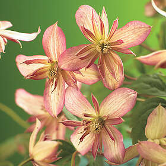
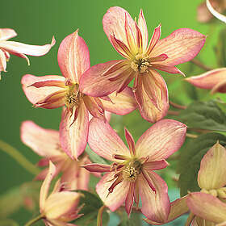

The [attribute~="value"] selector is used to select elements with a attribute value containing a specified word.
The following example selects all elements with a title attribute that contains a space-separated list of words, one of which is "flower":
All images with the title attribute containing the word "flower" get a yellow border.
 
